Toque numa miniatura para comparar as duas apresentações. Seis pilotos aprovados; 94 novas artes para revisão final. Nada substitui a arte dos quadros já salvos.
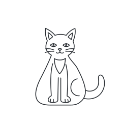
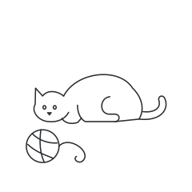
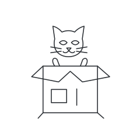
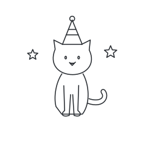
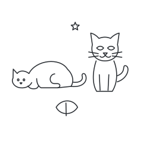
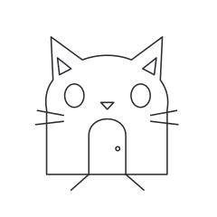
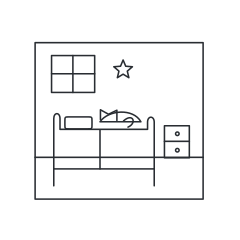
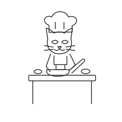
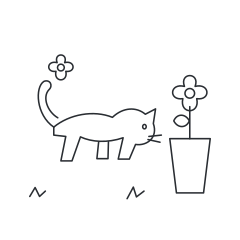
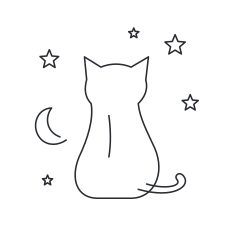
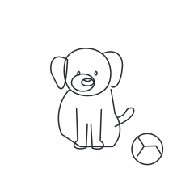
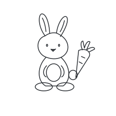
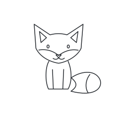
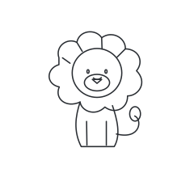
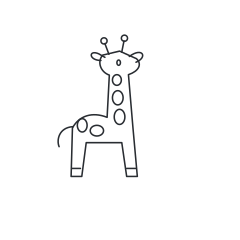
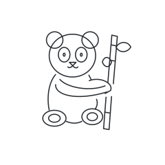
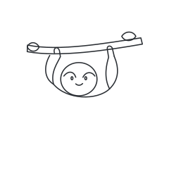
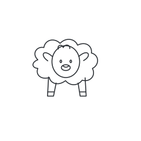
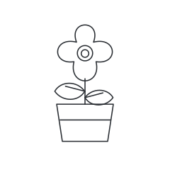
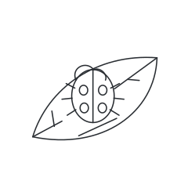
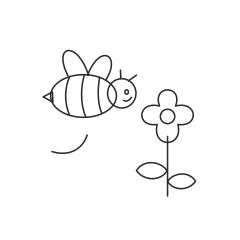
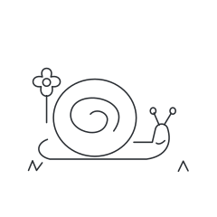
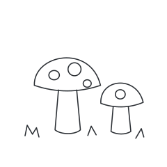
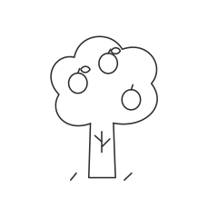
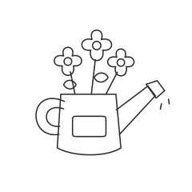
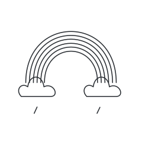
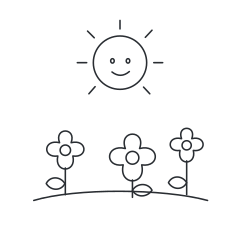
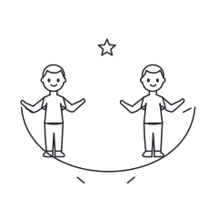
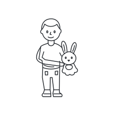
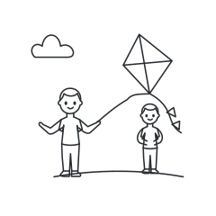
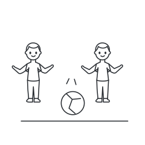
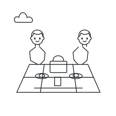
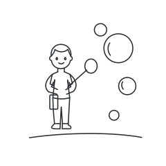
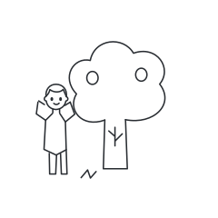
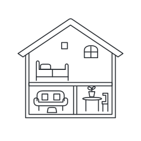
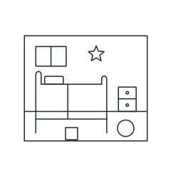
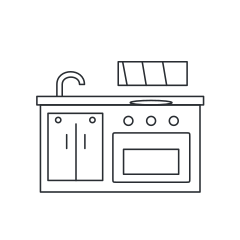
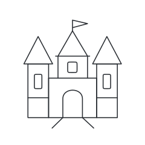
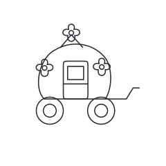
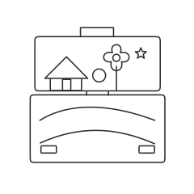
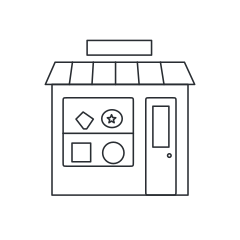
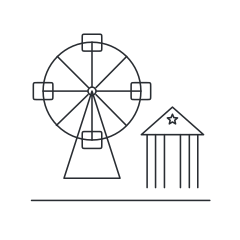
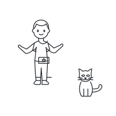
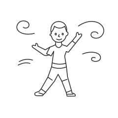
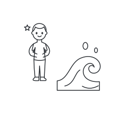
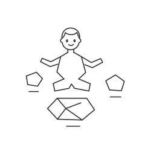
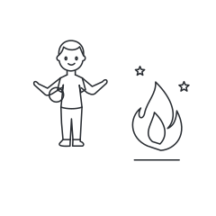
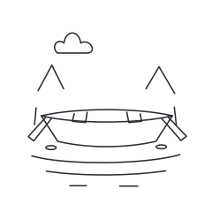
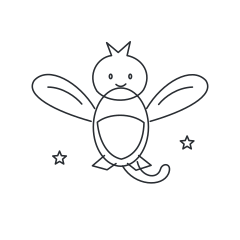
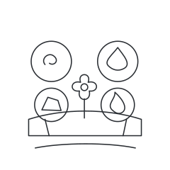